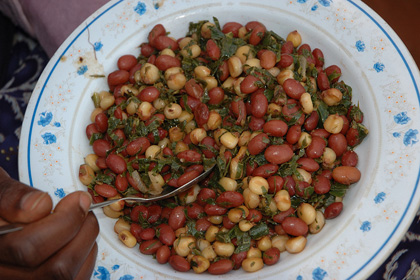

Githeri-meal (one pot cooked corn and beans)

Description
muthere or mutheri, is a traditional Kenyan meal consisting of maize and legumes (primarily beans) mixed and boiled together.[1] The maize and beans are mixed in a sufuria, a type of pot, with water added, and the mixture is boiled until fully cooked.[2]
It is the staple food of the Gikuyu, Meru, Mbeere people and Embu people in the Central Province and Eastern Province of Kenya. It is also popular in other parts of the country, such as with the Kamba people of the Eastern Province of Kenya.[1] The primary ingredients for this dish, maize and beans, are commonly found in local farms and homesteads.
Githeri can as well be cooked tongether with potatoes and some other vegitables like sukuma wiki(kales)
Ingridients;
- 1 cup mixture of boiled beans and white maize kernelsl
- 1 medium onion finely chopped
- 4-6 cloves garlic peeled and sliced or minced
- 1 medium tomato finely chopped
- 1 tsp salt
- 1 tbsp oil
- 1 cup cassava /any starchy vegetable peeled and diced
- cup spinach finely chopped
- ½ cup fresh pigeon pea/ peas
- 1 tsp coriander powder
- ¼ tsp turmeric powder
- 1 tbsp oil
- 2 -2½ cups water
Cooking procedure;
- Heat oil in pan over medium heat.
- Add chopped onion and stir fry till it becomes soft.
- Add chopped tomato and salt.
- Mix well. Cover the pan and let the tomatoes cook over low heat till they become soft.
- Mash the tomatoes up a bit with the spoon.
- Add the beans, maize, cassava and pigeon peas.
- Mash the tomatoes up a bit with the spoon.
- Cover the pan and allow the mixture to simmer till all the vegetables are cooked. If required add more water.
- Cook till most of the water is evaporated.
- Add chopped spinach and mix well. Cook for 2-3 minutes and serve hot githeri. Its usually eaten on its own.
NOTES:
To reduce the cooking time, boil the beans and maize beforehand. Can store them in the freezer.
As mentioned above you can add your choice of vegetables.
Add meat or fish of your choice.